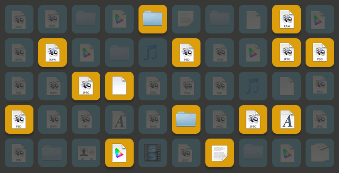

PS Projects
Files Collection Management
Files Collections
You might need to group different files from different folders, for instance because they belong to the same project - like a selection from products shooting, assets for a website you're developing, a composite image made with several elements.
You may also not want to duplicate or move the files in a separate folder.
PS Project files
PS Projects implements in Photoshop the concept of Project Files - i.e. Collections of any kind of files (JPG, RAW, PDF, even Text or Music) that belongs to different folders in the bottomless pit of your hard drives. You can operate on them (open, backup, batch processing) without the need to copy or consolidate them in a single folder.
Project Operations
So what do you do with a Project file? You can just open all the linked files at once in Photoshop to work on them as usual; or Backup (i.e. consolidate them) in a single directory, or use them as a source for Actions even if the referenced files belongs to different folders: no need of Bridge anymore for batch processing!
Lightweight / Encrypted
A Project file weights just few Kilobytes no matter how many assets it manages. That's because it just references the actual files in their original locations, i.e. contains aliases to them plus some metadata. Privacy is ensured because the referenced files' information is encrypted.
This PS Project 2 screencast has been produced by Webucator - customized instructor-led training services as a part of their Photoshop Training Classes.
PS Projects (2.0.0)
Multiplatform License $14.95
Buy on Adobe Add-ons Photoshop CS6 → CC2015 (Mac & Win)